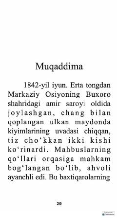

KOMarkaziy Osiyo uchun kurashgan Rossiya va Britaniya imperiyalarining yashirin tarixi.
Kitob XIX asrda Markaziy Osiyo hududida Rossiya va Britaniya imperiyalari o'rtasida kechgan yashirin geosiyosiy qarama-qarshilik — «Katta o'yin» tarixi haqida hikoya qiladi. Asarda polkovnik Charlz Stoddart va kapitan Artur Konollining Buxoro amirligidagi fojiali taqdiri hamda o'sha davrdagi josuslik va diplomatiya o'yinlari ochib beriladi.